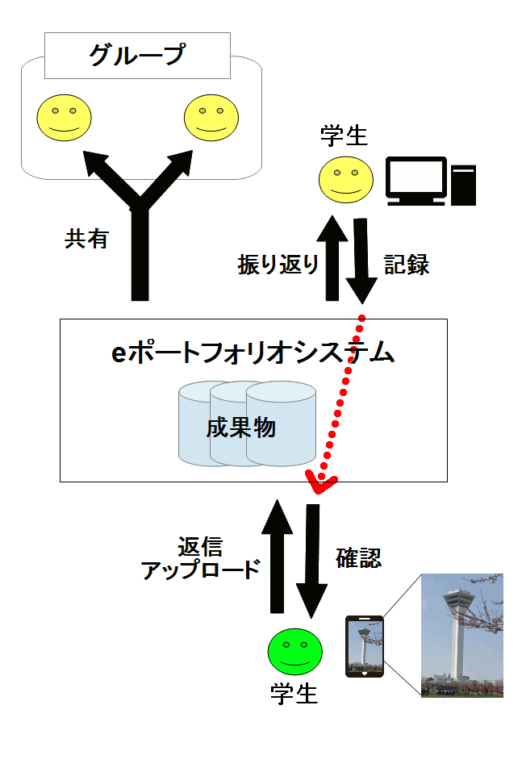
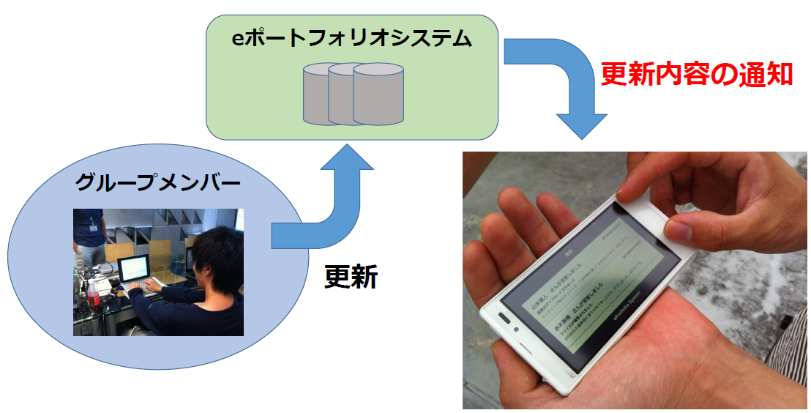
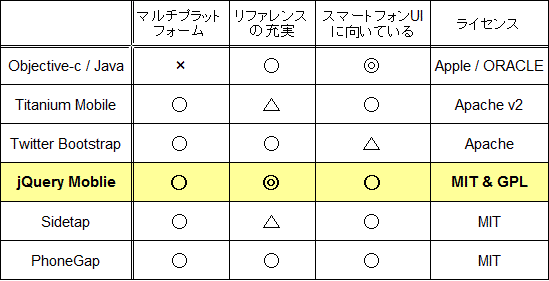

スマートフォンへの対応に向けた
eポートフォリオシステムの拡張
M2 佐藤隆広
M1 秀毛嶺維馬
B3 ○ 山本賢人 梅本祥平 中野佑 菊谷悠太
B2 菅野久樹 佐藤祐磨 赤木勇極
2012/08/31 2012年度 前期 高度ICT演習成果発表会
アジェンダ
- 背景：eポートフォリオシステム
- 提案：スマートフォンによる情報共有の促進
- 利用例
- 活動目的
- 開発技術、手法
- スケジュール
- 前期からの学び
背景：eポートフォリオシステム
|
大学教育の変化により、学習ポートフォリオが必要に
eポートフォリオシステムとして実現される
-
学習成果物を作成・蓄積→振り返り
-
グループ学習で成果物を共有
本学でも来年度にeポートフォリオシステムを導入予定
-
プロジェクト学習の授業で未来大のプロジェクト学習向けeポートフォリオシステムを開発中
|
|

|
提案：スマートフォンによる情報共有の促進
- 共有中の成果物の更新を即座に確認
- 短いメッセージを手軽に返信
- 写真や動画を簡単にアップロード
|
|

|
スマートフォンから利用する際の問題点
PC用ユーザインタフェースをそのまま利用するのは困難

活動目的：eポートフォリオシステムをスマートフォン向けに拡張
スマートフォン向けの機能
- 通知機能とアップロード機能をメインにする
- スマートフォンから使える機能を限定する
スマートフォン向けのユーザインタフェース
- 通知・検索をベースとしたナビゲーションを実装する
- 入力のフォーマットを工夫する
通知機能：更新情報の通知
共有している成果物が変更されると、システムから即時通知をうけられる
ユーザストーリー： 共有しているソースコードが書き換えられると、グループメンバーに通知が届く

アップロード機能：写真のアップロード
学習成果物として使いたい写真や動画を、PCを介さずに直接アップロードする
ユーザストーリー： ホワイトボードの写真を議事録に添付する

|

|
必要となる開発技術
|
スマートフォン向けのUIの実現
|
→ |
jQuery Mobile |
|
スマートフォンのカメラやGPSを利用
|
→ |
HTML5 DeviceAPI |
|

|
|

|
採用した開発手法
|
知識の共有
|
→ |
- ペアプログラミング
- 議事録
- 勉強会
- GitHub
- Ruby
- jQuery Mobile, HTML5 Canvas
|
前期の活動の成果
|
環境構築
|
- GitHub, SeleniumIDE, Aptana Studio 3
|
|
SeleniumIDEの学習
|
- SeleniumIDEを用いてブラウザ上でテスト内容を記録し、Rubyのテストコードの生成方法を学習
- 生成したテストコードをjQueryMobileのWebページに対して実行できることを確認
|
|
GitHubの学習
|
|
|
Rubyの学習
|
|
|
HTML5の学習
|
- jQuery Mobileを用いたログイン画面の作成
- Canvasを使ったJavaScriptの学習
|
|
仕様検討
|
- スマートフォン向けの機能、UIの検討
- 採用技術の検討
|
後期の活動の予定
ペアプログラミングの学習
HTML5 Device APIの学習
- iOSではブラウザ経由での画像アップロードができない
- GPSなど他のデバイスを必要に応じて利用
Ruby on Railsの学習
仕様検討(引き続き)
実装
前期からの学び
- 上級生が知識を教える予定だったが、2年生しか集まれないことがあった
→ 事前のタスク割り振りなどにより、全員が集合できなくても作業で
きるように改善する
- 分散バージョン管理システムによって、効率的に共有ファイルを編集できるということがわかった。
- 変更ログメッセージの書き方を取り決めていなかったため、どう変更したのかわからなかった
- 拡張のためには、Ruby on Railsの学習が必要とわかったため、学習を行う
まとめ
活動目的
予定している機能
前期の活動の成果
- 学習(GitHub, SeleniumIDE, HTML5, Ruby)
- 仕様検討
後期の活動の予定
- 学習(ペアプログラミング, HTML5 Device API, Ruby on Rails)
- 開発(仕様、実装）
対質問ページのメモ
C2dm on Rails (Android Cloud to Device Messaging on Rails)
APN on Rails (Apple Push Notifications on Rails)
GitHub
SeleniumIDE
Firefoxのアドオンで、Seleniumテストケースを作成するためのIDE
ユーザの操作を記録し、再利用することが可能
 ←
→
←
→
/
#